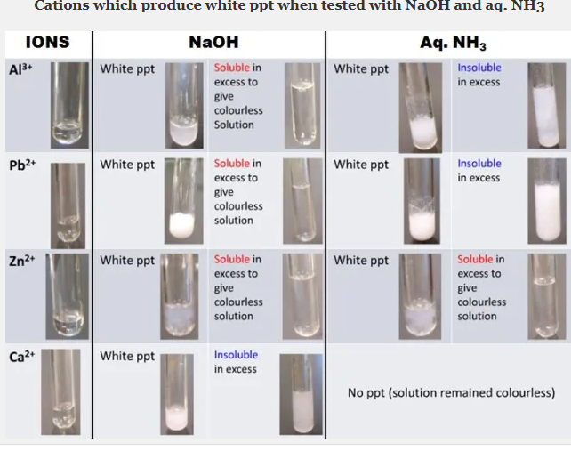

Focus of This Practice
This test trains candidates to handle the same reagents with a different question emphasis: titre accuracy, mole ratio, sulphate confirmation, displacement by zinc and clean observation language.
Question 1 - Redox Titration
E is \(KMnO_4\). D is ethanedioic acid. Put E in the burette and titrate it against \(20.0\,cm^3\) or \(25.0\,cm^3\) of D as directed by your centre, after acidifying with dilute \(H_2SO_4\) and warming.
- Prepare a complete titration table.
- Calculate the average titre if the accurate titres are \(20.35\,cm^3\), \(20.40\,cm^3\), and \(20.35\,cm^3\).
- If \(20.0\,cm^3\) of D was used and \(C_D=0.0500\,mol\,dm^{-3}\), calculate \(C_E\).
- Calculate the mass concentration of E in \(g\,dm^{-3}\).
- Explain why \(KMnO_4\) is a self-indicator.
Question 2 - Qualitative Analysis
F contains a copper(II) salt and starch. Carry out confirmatory tests for the cation, anion and organic component.
- Add water to F and filter.
- Test the residue with iodine.
- Test portions of the filtrate with NaOH, NH3, BaCl2 plus HCl, Pb(NO3)2 and zinc dust.
Question 3 - Practical Theory
- State two precautions in permanganate titration.
- Why should the flask be swirled during titration?
- Why is dilute \(HNO_3\) used before some precipitation tests?
- State the colour of \(Cu(OH)_2\).
- Describe how to identify starch in F.
Best Solution
Question 1
Teacher: The mole ratio is the heart of this calculation. From the equation, 2 moles of \(MnO_4^-\) react with 5 moles of ethanedioate.
Question 2
| Test | Observation | Inference |
|---|---|---|
| Residue + iodine | Blue-black colour. | Starch present. |
| Filtrate + NaOH | Blue precipitate, insoluble in excess. | \(Cu^{2+}\) present. |
| Filtrate + excess NH3 | Deep blue solution. | \(Cu^{2+}\) confirmed. |
| Filtrate + BaCl2 + HCl | White precipitate insoluble in acid. | \(SO_4^{2-}\) confirmed. |
| Filtrate + Pb(NO3)2 | White precipitate. | \(SO_4^{2-}\) supported. |
| Filtrate + zinc dust | Blue colour fades; brown copper deposit. | Displacement of copper by zinc. |
Teacher Diagram Class

Titration
Keep E in the burette and stop at permanent pale pink.

Sulphate
BaCl2 gives white BaSO4 that remains after acid is added.

Copper(II)
The blue precipitate is \(Cu(OH)_2\).